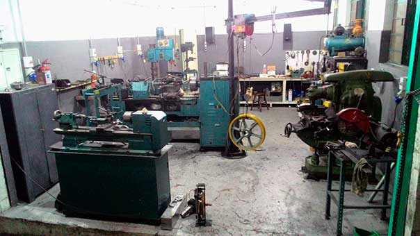

Quem somos
A Shiro Usinagens é uma empresa atuando em parceria com nossos clientes prestando serviços na solução de suas demandas, com agilidade, qualidade e a melhor relação custo x benefício do mercado.
Nossa equipe é formada por profissionais com mais de 30 anos de experiência em usinagem de pequeno e médio porte, manutenção, recondicionamento, diagnósticos, com larga experiência industrial e no segmento de elevadores com destaque à montagens, manutenções mecânicas e usinagens em geral.
